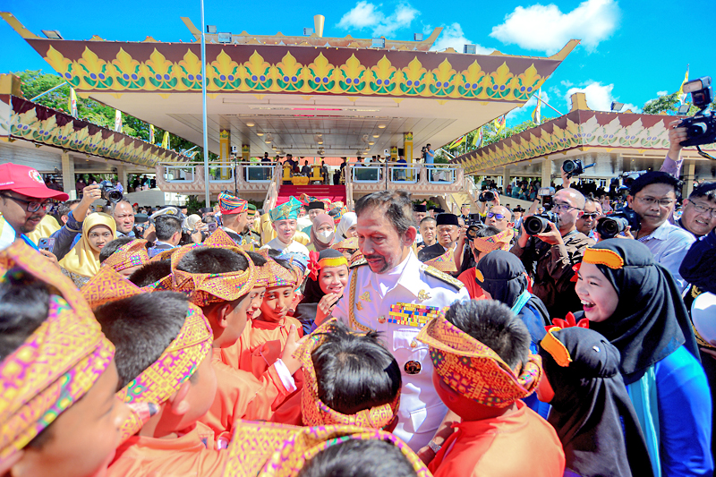
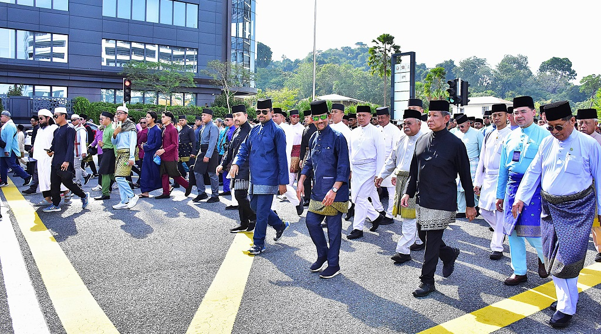
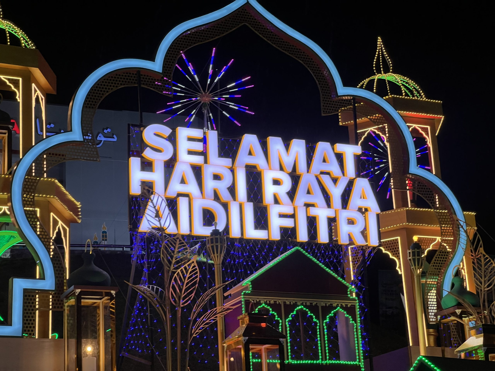

Welcome to Brunei
Where is Brunei located?
Brunei is a small country in the SouthEast of Asia, hidden somewhere in a small island called Borneo which is also shared with Indonesia and Malaysia. It is known for their rich culture and peaceful environment whereas this country is an Islamic country.
Brunei Events

Hari Kebangsaan or National Day
Here we celebrate our national day on the 23rd of February.

Maulud Nabi
It is a celebration remembering the birth of the Prophet Muhammad. It is celebrated follow the Islamic Calendar on the 12th of Rabiul Awal. Since this is an Islamic country, this celebration is to show our love and respect to our Prophet.

Hari Raya
It is celebrated after the month of fasting, where every Muslim gather with their family, visit their relatives and seek forgiveness. The royal palace is also open to the whole Bruneian where the people can visit and meet the Sultan.
Explore Brunei Now
Visit our beautiful places, cultures as well as our delicious food